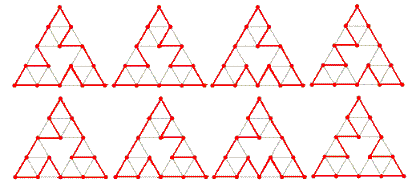

Cyclic paths on Sierpiński graphs
Problem 312
- A Sierpiński graph of order-1 (S1) is an equilateral triangle.
- Sn+1 is obtained from Sn by positioning three copies of Sn so that every pair of copies has one common corner.

Let C(n) be the number of cycles that pass exactly once through all the vertices of Sn.
For example, C(3) = 8 because eight such cycles can be drawn on S3, as shown below:

It can also be verified that :
C(1) = C(2) = 1
C(5) = 71328803586048
C(10 000) mod 108 = 37652224
C(10 000) mod 138 = 617720485
Find C(C(C(10 000))) mod 138.